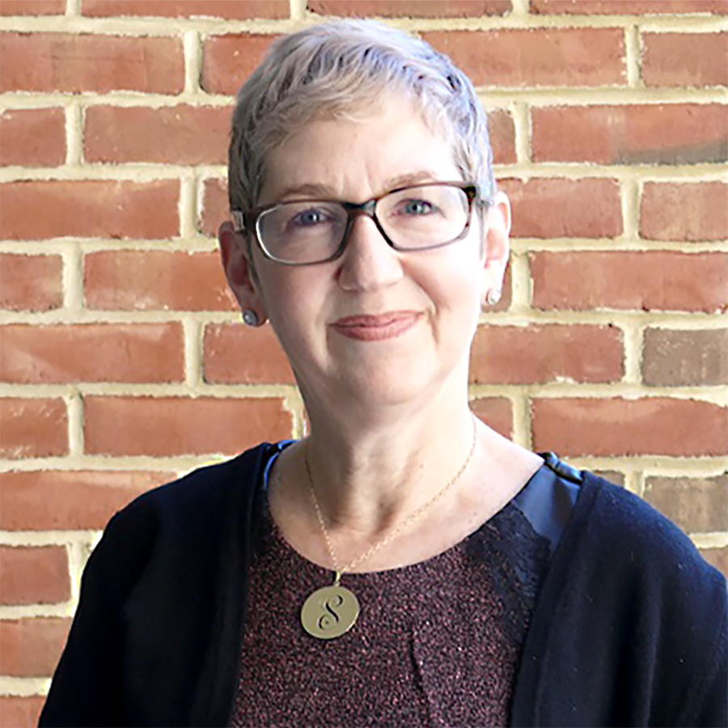

Legal Workshop
Friday, August 9th
1:00 PM - 2:00 PM
Law Professor Round Robin With Prof. Andrea Matwyshyn, Prof. Stephanie Pell & Prof. Margaret Hu
Get an introduction to the hottest open legal issues in the law of security and where three cutting-edge thinkers see the law going
 |
Andrea M. Matwyshyn is a (tenured full) professor in the law school and engineering school at Penn State, the Associate Dean of Innovation at Penn State Law (University Park), and the founding director of the Penn State PILOT Lab (Policy Innovation Lab of Tomorrow), an interdisciplinary technology policy lab. She is also a faculty affiliate of the Center for Internet and Society at Stanford Law School and a Senior Fellow of the Cyber Statecraft Initiative at the Atlantic Council's Brent Scowcroft Center on International Security. In 2014, she served as the Senior Policy Advisor/ Academic in Residence at the U.S. Federal Trade Commission. Prior to becoming an academic, she was a corporate attorney in private practice, focusing her work on technology transactions. |
 |
Stephanie Pell is an Assistant Professor and Cyber Ethics Fellow at West Point’s Army Cyber Institute (ACI), with joint appointments to the Department of English and Philosophy and the Department of Law, where she teaches courses in cyber ethics and constitutional and military law. Professor Pell is also an Affiliate Scholar at the Center for Internet and Society at Stanford Law School. Prior to joining the ACI faculty, Professor Pell served as Majority Counsel to the House Judiciary Committee under then Chairman John Conyers, serving as lead counsel on Electronic Communications Privacy Act (ECPA) reform and PATRIOT Act reauthorization during the 111th Congress. Professor Pell was also a federal prosecutor for over fourteen years, working as a Senior Counsel to the Deputy Attorney General, as a Counsel to the Assistant Attorney General of the National Security Division, and as an Assistant U.S. Attorney in the U.S. Attorney’s Office for the Southern District of Florida. She was a lead prosecutor in U.S. v. Jose Padilla (American Citizen detained as an enemy combatant prior to criminal indictment, trial, and conviction on various terrorism charges), for which she received the Attorney General’s Exceptional Service Award, and in U.S. v. Conor Claxton (IRA operatives who purchased weapons in South Florida and smuggled them into Belfast, Northern Ireland during peace process negotiations). |
 |
Margaret Hu is an Associate Professor of Law at Washington and Lee University School of Law. Her research interests include the intersection of immigration policy, national security, cybersurveillance, and civil rights. Previously, she served as senior policy advisor for the White House Initiative on Asian Americans and Pacific Islanders, and also served as special policy counsel in the Office of Special Counsel for Immigration-Related Unfair Employment Practices (OSC), Civil Rights Division, U. S. Department of Justice, in Washington, D.C. As Special Policy Counsel, Hu managed a team of attorneys and investigators in the enforcement of the anti-discrimination provisions of the Immigration and Nationality Act (INA), and was responsible for federal immigration policy review and coordination for OSC. |
2:00 PM - 3:00 PM
Coffee Talk With Anthony Ferrante
|
Anthony J. Ferrante is a Senior Managing Director and the Global Head of Cybersecurity at FTI Consulting. Mr. Ferrante is an expert in data privacy and cybersecurity resilience, prevention, response, remediation, and recovery services. Mr. Ferrante has more than 20 years of top‐level cybersecurity experience, providing incident response and preparedness planning to more than 1,000 private sector and government organizations, including more than 175 Fortune 500 companies and 70 Fortune 100 companies. Mr. Ferrante maintains first‐hand operational knowledge of more than 60 criminal and national security cyber threat sets, and extensive practical expertise researching, designing, developing and hacking complex technical applications and hardware systems. Mr. Ferrante advises clients on data privacy compliance and risk management, specifically addressing issues related to data transfer, employee access, vendor management, marketing, and cloud computing. Prior to joining FTI Consulting, Mr. Ferrante served as Director for Cyber Incident Response at the U.S. National Security Council at the White House where he coordinated U.S. response to unfolding domestic and international cybersecurity crises and issues. Building on his extensive cybersecurity and incident response experience, he led the development and implementation of Presidential Policy Directive 41 –United States Cyber Incident Coordination, the federal government’s national policy guiding cyber incident response efforts. Before joining the National Security Council, Mr. Ferrante was Chief of Staff of the FBI’s Cyber Division. He joined the FBI as a special agent in 2005, assigned to the FBI’s New York Field Office. In 2006, Mr. Ferrante was selected as a member of the FBI’s Cyber Action Team, a fly‐team of experts who deploy globally to respond to the most critical cyber incidents on behalf of the U.S. Government. Mr. Ferrante was an Adjunct Professor of Computer Science at Fordham University’s Graduate School of Arts and Sciences, where he served as the founder and co‐director of the Master’s of Science in Cybersecurity program in the Graduate School of Arts and Sciences. During his time at Fordham University, he served as the co‐director of the undergraduate and graduate cybersecurity research programs. |
3:00 PM - 4:00 PM
Coffee Talk With Dr. Suzanne Schwartz
|  |
Dr.Suzanne Schwartz’s programmatic efforts in medical device cybersecurity extend beyond incident response to include raising awareness, educating, outreach, partnering and coalition-building within the Healthcare and Public Health Sector (HPH) as well as fostering collaborations across other government agencies and the private sector. Suzanne has been recognized for Excellence in Innovation at FDA’s Women’s History Month on March 1st 2018 for her work in Medical Device Cybersecurity. Suzanne chairs CDRH’s Cybersecurity Working Group, tasked with formulating FDA’s medical device cybersecurity policy. She also co-chairs the Government Coordinating Council (GCC) for the HPH Critical Infrastructure Sector, focusing on the sector’s healthcare cybersecurity initiatives.
|
4:00 PM - 5:00 PM
Coffee Talk With Austin King
|
Joshua Steinman currently serves as Special Assistant to the President and Senior Director for Cyber. He has had a mixed career as a military officer serving both in the United States and abroad, and as a senior private sector executive in Silicon Valley. He holds degrees from the University of Chicago and Georgetown.
|
4:00 PM - 5:00 PM
Coffee Talk With Erie Meyer
|
Erie Meyer is the Technology Advisor for Commissioner Rohit Chopra at Federal Trade Commission. Meyer was the co-founder of the United States Digital Service at the White House, Tech Ladymafia, and the Tech and Innovation team at the Consumer Financial Protection Bureau. She also stood up the first digital office of the Ohio Attorney General.
Meyer formerly held roles as a Shorenstein Fellow at the Harvard Kennedy School of Government, Senior Advisor to the United States Chief Technology Officer Todd Park at the White House, and Senior Director at Code for America.[6][7] At the White House, she worked on Open Data Initiatives, the Presidential Innovation Fellows program, and cross-agency programs to improve technology in government. Meyer was named Forbes 30 under 30 for Technology and Fedscoop's Top 50 Women in Tech. In 2018 she was featured among "America's Top 50 Women In Tech" by Forbes.
|